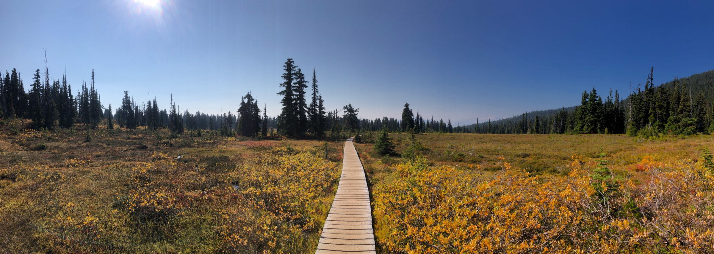

Stage 5 of 5 · Live big
Live Big
Sobriety was never the goal. The goal is a life big enough that drinking doesn't fit in it. You've built the floor. Now build on it.
You're here if
- Not drinking has stopped being the main event of your day
- You've got energy, money and mornings you didn't used to have
- You want to know what all this effort was for
The job of this stage
Go and do the things. Then turn around and hold the door for whoever is behind you. Those two halves keep each other honest. The adventures keep it from getting small, and the giving back keeps it from getting selfish.